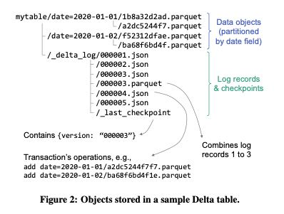
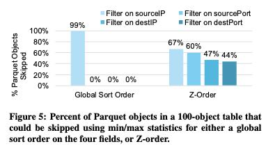

Delta Lake: High-Performance ACID Table Storage over Cloud Object Stores
数据湖面临两个问题，一个是元数据获取比较慢，一个则是一致性不太好保证。Delta Lake的办法没有使用特殊的Store，只是在写入协议上做文档：将元数据写入到特定的json文件里面，并且以类似Log的形式来合并元数据；一致性则利用object store某些原子操作特性加上optimistic CC来搞定。
Cloud object stores such as Amazon S3 are some of the largest and most cost-effective storage systems on the planet, making them an attractive target to store large data warehouses and data lakes. Unfortunately, their implementation as key-value stores makes it dif- ficult to achieve ACID transactions and high performance: metadata operations such as listing objects are expensive, and consistency guarantees are limited.
However, it creates both correctness and performance challenges for more complex workloads. First, because multi-object updates are not atomic, there is no isolation between queries: for example, if a query needs to update multiple objects in the table (e.g., remove the records about one user across all the table’s Parquet files), readers will see partial updates as the query updates each object individually. Rolling back writes is also difficult: if an update query crashes, the table is in a corrupted state. Second, for large tables with millions of objects, metadata operations are expensive. For example, Parquet files include footers with min/max statistics that can be used to skip reading them in selective queries. Reading such a footer on HDFS might take a few milliseconds, but the latency of cloud object stores is so much higher that these data skipping checks can take longer than the actual query.
数据文件是以Parquet格式存储的，写入到object store上面去(immutable)；之后会将数据文件中的metadata，以及元数据操作，写入到json文件下面。Delta lake没有使用专门的LogStore，目的是为了尽可能低将服务依赖减少到最低，当前实现就只完全依赖于object store. 只不过在read/write的时候需要使用某种特殊协议。metadata operation log会定期合并形成checkpoint, 这个checkpoint文件是parquet格式。
To address these challenges, we designed Delta Lake, an ACID table storage layer over cloud object stores that we started providing to customers in 2017 and open sourced in 2019 [26]. The core idea of Delta Lake is simple: we maintain information about which objects are part of a Delta table in an ACID manner, using a write-ahead log that is itself stored in the cloud object store. The objects themselves are encoded in Parquet, making it easy to write connectors from engines that can already process Parquet. This design allows clients to update multiple objects at once, replace a subset of the objects with another, etc., in a serializable manner while still achieving high parallel read and write performance from the objects themselves (similar to raw Parquet).
The log also contains metadata such as min/max statistics for each data file, enabling order of magnitude faster metadata searches than the “files in object store” approach. Crucially, we designed Delta Lake so that all the metadata is in the underlying object store, and transactions are achieved using optimistic concurrency protocols against the object store (with some details varying by cloud provider). This means that no servers need to be running to maintain state for a Delta table; users only need to launch servers when running queries, and enjoy the benefits of separately scaling compute and storage.

Delta lake解决了数据湖分析上下面几个问题：
- Time travel to let users query point-in-time snapshots or roll back erroneous updates to their data. （可以根据checkpoint来选择某个时间点进行读取分析）
- UPSERT, DELETE and MERGE operations, which efficiently rewrite the relevant objects to implement updates to archived data and compliance workflows (e.g., for GDPR [27]). （因为object都是immutable的，所以事先起来并不复杂）
- Efficient streaming I/O, by letting streaming jobs write small objects into the table at low latency, then transactionally coalescing them into larger objects later for performance. Fast “tailing” reads of the new data added to a table are also sup- ported, so that jobs can treat a Delta table as a message bus.（新来的数据都是不断地生成小文件，然后定期合并形成大文件）
- Caching: Because the objects in a Delta table and its log are immutable, cluster nodes can safely cache them on local storage. We leverage this in the Databricks cloud service to implement a transparent SSD cache for Delta tables.（因为文件都是immutable的，所以缓存起来并不复杂）
- Data layout optimization: Our cloud service includes a fea- ture that automatically optimizes the size of objects in a table and the clustering of data records (e.g., storing records in Z- order to achieve locality along multiple dimensions) without impacting running queries.（将小文件合并成为大文件，合并同时使用z-order来提升多个字段的过滤度）
- Schema evolution, allowing Delta to continue reading old Parquet files without rewriting them if a table’s schema changes.（针对schema不兼容的parquet文件进行改写）
- Audit logging based on the transaction log.（metadata都是存储在专门的文件下面，所以做审核不难）
schema evolution 我不太能想象出什么时候会使用：简单期间大家会不断地append column, delete column则属于可有可无操作，rename column的话似乎也没有必要去重写object
Datasets maintained over a long time often require schema up- dates, but storing these datasets as “just a bunch of objects” means that older objects (e.g., old Parquet files) might have the “wrong” schema. Delta Lake can perform schema changes transactionally and update the underlying objects along with the schema change if needed (e.g., delete a column that the user no longer wishes to retain). Keeping a history of schema updates in the transaction log can also allow using older Parquet objects without rewriting them for certain schema changes (e.g., adding columns). Equally importantly, Delta clients ensure that newly written data follows the table’s schema. These simple checks have caught many user errors appending data with the wrong schema that had been challenging to trace down when individual jobs were simply writing Parquet files to the same directory before the use of Delta Lake.
z-ordering可以对每个字段都达到比较理想的效果，paper中给的测试是tcp 4元组(srcip, srcport, dstip, dstport).
In contrast, Z-ordering by all four columns allows skipping at least 43% of the Parquet objects for queries in each dimension, and 54% on average if we assume that queries in each dimension are equally likely (compared to 25% for the single sort order). These improvements are higher for tables with even more Parquet objects because each object contains a smaller range of the Z-order curve, and hence, a smaller range of values in each dimension. For example, multi-attribute queries on a 500 TB network traffic dataset at the organization described in Section 5.4.1, Z-ordered using multiple fields similar to this experiment, were able to skip 93% of the data in the table.

关于AWS S3使用情况
- LIST每次只能返回1000 keys, 并且花费10-100ms. 这个操作开销非常大。
- 支持range read
- update是原子操作，但是会重写object.
- 支持read-after-write consistency, 但是如果GET/PUT/GET那么可能无效(negative caching)
- LIST是最终一致性，所以想要靠S3本身管理元数据是不行的。
- read延迟大约在5-10ms(我实测远比这个大，不知道是不是和region有关系)，单个session带宽在50-100MB/s, 所以naturalReadSize最好是在1MB-2MB之间。
- 为了能跑满10Gbps, 那么通常需要8-10个session并行读取。
Unfortunately, these metadata APIs are generally expensive: for example, S3’s LIST only returns up to 1000 keys per call, and each call takes tens to hundreds of millisec- onds, so it can take minutes to list a dataset with millions of objects using a sequential implementation.
When reading an object, cloud object stores usually support byte- range requests, so it is efficient to read just a range within a large object (e.g., bytes 10,000 to 20,000). This makes it possible to leverage storage formats that cluster commonly accessed values.
Updating objects usually requires rewriting the whole object at once. These updates can be made atomic, so that readers will either see the new object version or the old one. Some systems also support appends to an object [48].
The exact consistency model differs by cloud provider, and can be fairly complex. As a concrete example, Amazon S3 provides read- after-write consistency for clients that write a new object, meaning that read operations such as S3’s GET will return the object contents after a PUT. However, there is one exception: if the client writing the object issued a GET to the (nonexistent) key before its PUT, then subsequent GETs might not read the object for a period of time, most likely because S3 employs negative caching.
For reads, the most granular operation available is reading a sequential byte range, as described earlier. Each read operation usually incurs at least 5–10 ms of base latency, and can then read data at roughly 50–100 MB/s, so an operation needs to read at least several hundred kilobytes to achieve at least half the peak throughput for sequential reads, and multiple megabytes to approach the peak throughput. Moreover, on typical VM configurations, applications need to run multiple reads in parallel to maximize throughput. For example, the VM types most frequently used for analytics on AWS have at least 10 Gbps network bandwidth, so they need to run 8–10 reads in parallel to fully utilize this bandwidth.
所以Best Practices有下面几条：
Implications for Table Storage. The performance characteristics of object stores lead to three considerations for analytical workloads:
- Keep frequently accessed data close-by sequentially, which generally leads to choosing columnar formats.
- Make objects large, but not too large. Large objects increase the cost of updating data (e.g., deleting all data about one user) because they must be fully rewritten.
- Avoid LIST operations, and make these operations request lexicographic key ranges when possible.
object size应该多大，这个在后面 "Data Layout Optimization"有提到
OPTIMIZE Command. Users can manually run an OPTIMIZE command on a table that compacts small objects without affecting ongoing transactions, and computes any missing statistics. By de- fault, this operation aims to make each data object 1 GB in size, a value that we found suitable for many workloads, but users can customize this value.